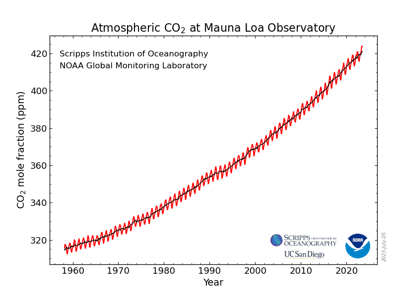
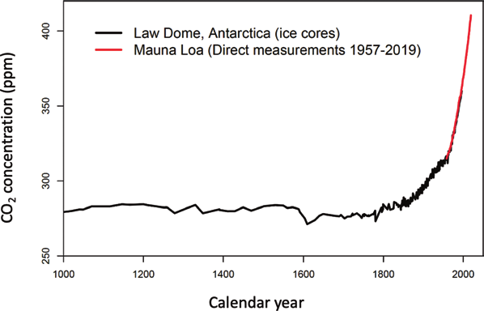
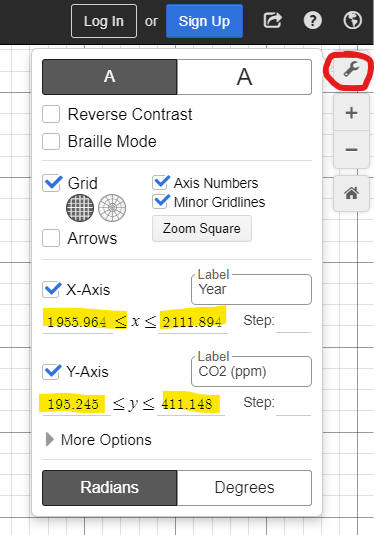
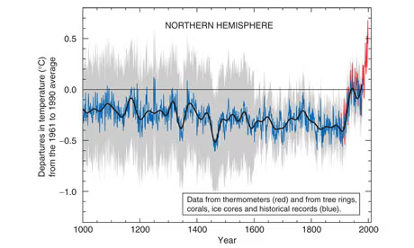

The goal for this lab is to learn about mathematical models related to carbon dioxide in our atmosphere. This lab deals specifically with linear, exponential, and periodic models.

Figure5.5.1.
Exercises
1.
Imagine that three scientists look at the graph above and each scientist tries to fit a different model to the data. The first scientist tries to fit a linear model to the data. The second scientist tries to fit an exponential model to the data. The third scientist tries to fit a periodic model to the data. Follow this link: https://www.desmos.com/calculator/byz3z1gibq and help them fit their models to the data to the best of your ability using the sliders.
(a)
Adjust the “a” and “b” to give the best linear model. Tell me your values of a and b.
(b)
Adjust the “c” and “d” to give the best exponential model. Tell me your values of c and d.
(c)
Adjust the “f” and “g” to give the best periodic model. Tell me your values of f and g.
(d)
Copy and paste a picture of your three models below. (Look for this button in the upper right hand side)
2.
For each hypothetical scientist, what does each of their models predict the carbon dioxide levels will be in the year 2060?
(a)
Linear
(b)
Exponential
(c)
Periodic
(d)
Now in Desmos, in the equation pane on the left, type in the equation
x = 2060
This will create a vertical line in the year 2060. Click on each of the three points where it intersects the scientists’ three models. This should display points whose y-coordinates match your answers to a. b. and c. above. (If they don’t match, then you have a mistake somewhere). Copy and paste a picture of these three points below.
3.
For each scientist’s model, interpret each of the given coefficients with all necessary units. Give each answer as a complete sentence.
Remember that “t” is the years since 1950. Zoom out enough so that you can see the year 1950 as well as the year (1950 + g). What does the periodic model predict about the amount of carbon dioxide in the year (1950 + g) compared with 1950?
4.
For each hypothetical scientist, use your best quantitative reasoning skills, your knowledge of the world, and your common sense to make educated guesses about each scientists’ assumptions. Specifically, what do you suppose each scientist is assuming about human causes of carbon dioxide versus natural causes of carbon dioxide?
(a)
Linear
(b)
Exponential
(c)
Periodic
Scientists have only been measuring \(\chem{CO_2}\) at Mauna Loa since 1960. However, scientists are able to drill ice cores from glaciers to estimate the amount of \(\chem{CO_2}\) over the last 1000 years. On the main graph below, the red, solid line is the Mauna Loa data, and the black line is the data from ice cores of a glacier in Antartica.

Figure5.5.2.D.M. Etheridge, L.P. Steele, R.L. Langenfelds, R.J. Francey, J.-M. Barnola and V.I. Morgan. 1998. Historical CO2 records from the Law Dome DE08, DE08-2, and DSS ice cores. In Trends: A Compendium of Data on Global Change. Carbon Dioxide Information Analysis Center, Oak Ridge National Laboratory, U.S. Department of Energy, Oak Ridge, Tenn., U.S.A.
5.
Let’s compare our three hypothetical scientists’ models to this historical data. In Desmos zoom your window to be the same as the graph above. Use the button circled in red and then change the highlighted numbers to match the scale of the picture from Figure 5.5.2.

(a)
Copy and paste your graph below.
(b)
Which of the hypothetical scientists’ models most accurately reflects the historical data?
(c)
The statistician George Box once said, “All models are wrong, but some are useful.” Name one thing wrong with the model you chose above, and then name one way that it is useful.
The following graphic is from a paper by Mann, Bradley, and Huges 1 . These scientists used information from tree rings, corals, ice cores, and historical records to reconstruct temperatures going back to 1000 A.D. The gray shaded area represents uncertainty.

Figure5.5.3.
6.
Answer the following questions with complete sentences. You may need to use your common sense and knowledge of the world. Considering the grey shaded area of uncertainty:
(a)
Why do you suppose that there is more uncertainty with the graph of temperature compared to the graph of carbon dioxide levels?
Think about how they are measured. The main source for temperature is tree ring data. Is it as easy to tell the temperature from tree rings as it is to measure \(\chem{CO_2}\) trapped in layers of a glacier?
(b)
Why is the uncertainty so much less for the temperatures closer to present day?
When were thermometers invented? Since when have we been recording temperatures all around the globe?
The figure above has been described as the “hockey stick graph”, and there has been controversy around it. An article in The Guardian 2 described some of the controversy:
Reconstructing past temperatures from proxy data is fraught with danger. Tree ring records, the biggest component of the hockey stick record, sometimes reflect rain or drought rather than temperature. When I investigated the continuing row surrounding the graph in 2006, Gordon Jacoby of Columbia University in New York, said: "Mann has a series from central China that we believe is more a moisture signal than a temperature signal... He included it because he had a gap. That was a mistake and it made tree-ring people angry." A large data set he used from bristlecone pines in the American west has attracted similar concern.
Deciding which data sets to include in such reconstructions was, if not arbitrary, then open to dispute. And dispute there was. In the late 1990s, the researchers in heated debate about what they could and could not reliably show about past temperatures, and how to represent their findings.
7.
(a)
If some researchers dispute which tree ring data sets Mann, Bradley, and Hughes used, then why does it matter?
(b)
Because of the controversy the scientists were investigated by the EPA, Pennsylvania University (where Mann was a professor), the Inspector General of the Department of Commerce, and the Office of the Inspector General of the National Science Foundation. All of these institutions cleared them of any wrongdoing.
Why does it matter that these institutions cleared the scientists of any wrongdoing?
Then compare their math model of temperature (Figure 3 on page 7) with the actual global average temperature given at the top of this site ncdc.noaa.gov/sotc/global/202013 4
Describe how the predictions from the 1982 memo compare to what actually happened.